Leia suas mensagens grátis!
+700.000 usuários discretos com os mesmos interesses
Metade do preço!!
Envie fotos que se autodestroem em 5s!
100% grátis para mulheres!
Perfis anônimos, chat secreto, fotos privadas
mensagens de voz que se autodestroem em 5 segundos!
Pare de competir com 1.000.000 de outros homens no Tinder. É quase impossível chamar a atenção de uma mulher e muito menos segurá-la por tempo suficiente para planejar um encontro.
O fato é que as mulheres em aplicativos de namoro são mimadas!!
Não seja outro perfil descartável que ela apenas desliza para a esquerda.
Você pode culpá-las?
Quando toda garota tem uma lista de homens a um quilômetro de distância, e todos os homens dessa lista vão fazer uma tentativa, parece que você só tem duas opções:
1. Desistir
2. Entrar na fila e esperar que seja seu dia de sorte.
Esse não precisa ser o caso.
Há um certo segmento de mulheres que não são mimadas pela escolha.
Isso porque elas já fizeram sua escolha.
Anos atrás!
E, francamente, elas estão começando a se arrepender.
Agora, antes que você torça o rosto, confuso, me escute.
Essas mulheres se retiraram do mundo do namoro por mais de 5 anos, e estão famintas por atenção, validação e satisfação.
Elas foram subestimadas e são gratas por chamarem a atenção de outro homem de alto padrão
O tinder não é uma opção para elas. Entrar no Tinder é, praticamente, a coisa mais arriscada que essas mulheres poderiam fazer.
Mas esse desejo de validação e satisfação é forte, e então essas mulheres inspiraram a comunidade de pessoas mais discretas e sem julgamentos do Brasil, o Sasha7.
No Sasha7, elas podem ser elas próprias de forma autêntica e livre de julgamento, sem a necessidade de jogos.
Esposas insatisfeitas tornam isso simples.
Paquerar ficou muito mais fácil...
Tinder mudou totalmente o jogo de namoro. As mulheres estão mais abertas a conhecer homens on-line e mais abertas a relacionamentos casuais e sexo de uma noite por causa disso.
Mas e se você for casado ou comprometido?
Você ainda pode usar o Tinder?
A RESPOSTA É NÃO.
Não use o aplicativo Tinder se você é casado, com certeza será pego.
Então, se você está se chutando, desejando que Tinder já estivesse por perto antes de se casar, leia isso! Porque existe um aplicativo anônimo tipo tinder para casados.
Para se inscrever no Tinder, é necessário ter um perfil no Facebook. Isso significa que o Tinder usa seu perfil pessoal do Facebook para criar a base do seu perfil do Tinder!
TINDER USA SEU NOME E IDADE DO FACEBOOK!
Além disso, o Tinder é tão amplamente utilizado, mesmo que você decida se inscrever com sua conta do Facebook, seria apenas uma questão de tempo até que uma das amigas solteiras de sua esposa o veja no Tinder e conte a ela.
Você não pode enviar fotos discretas para o Tinder e esperar obter resultado, porque existem milhões de homens com fotos de rosto inteiro com as quais está competindo.
Então, isso significa que, se você é casado ou comprometido, está fadado a perder toda a diversão e emoção de passar o dedo no Tinder?
Felizmente, existe um "tinder para casados" e é assim como funciona o tinder para casados!
Sasha7 É UM APLICATIVO PARA CASADOS TRAIREM QUE FUNCIONA EXATAMENTE COMO O TINDER.
Sasha7 foi criada exclusivamente para traidores, então a maioria dos usuários são casados ou comprometidos e há uma "destruição mutuamente garantida". Ou seja, se alguém o vê na Sasha7 (tinder para traição), ele não o denuncia, pois precisaria explicar por que estava no site.
Sasha7 funciona perfeitamente no seu telefone da mesma maneira que o Tinder para casasdos E você pode ver usuários próximos a você ajustando o raio da pesquisa.
O Tinder para casados possui recursos adicionais que o Tinder não tem, feito especificamente para mantê-lo 100% seguro e discreto.
Sasha7 permite que você se inscreva sem verificação de e-mail, o que significa que você sempre pode reivindicar que outra pessoa usou seu e-mail e que você não tinha ideia.
O Tinder obriga você a usar seu perfil pessoal do Facebook com o nome e idade reais aparecendo no seu perfil.
Sasha7 tem um assistente de fotos que permite colocar uma máscara sobre o rosto ou desfocar a imagem para que você não possa ser identificado. Além disso, os usuários de Sasha7 compreendem muito mais que talvez não vejam uma imagem clara do rosto imediatamente. Tente fazer isso no seu perfil do Tinder e veja quantas correspondências você recebe.
Sasha7 também oferece uma galeria privada onde você pode armazenar suas fotos e conceder e revogar o acesso aos usuários a qualquer momento.
No Tinder, todas as suas fotos podem ser visualizadas.
Sasha7 tem um site para dispositivos móveis muito rápido, para que você não precise baixar um aplicativo para o seu telefone. Isso é especialmente útil para pessoas cujos parceiros freqüentemente têm acesso ao telefone.
O Tinder só pode ser acessado como um aplicativo que você precisa baixar no seu telefone.
Sasha7 é 100% grátis para mulheres, o que garante uma base de usuárias femininas ativa e envolvente.
Tinder cobra homens e mulheres.
Se você quer toda a diversão e emoção de Tinder, mas é casado ou tem um relacionamento, definitivamente deveria experimentar o Tinder para Casados: Sasha7.
É seguro?
Segurança é a prioridade número 1 no Sasha7. Sasha7 é totalmente compatível com a GDPR e segue os regulamentos mais rígidos possíveis. Usamos criptografia de 256 bits, os serviços da web mais confiáveise SLA para manter nossos usuários seguros! Nós mantemos o mínimo possível de seus dados, por isso nunca pedimos um número de telefone ou para nos conectar a qualquer outra mídia social.
Vocês possuem pessoas próximas a mim?
Com mais de 1 milhão de usuários na América do Sul, você poderá facilmente encontrar um parceiro ao seu redor ou durante uma viagem. Os países onde somos mais populares são: Brasil, Mexico, e EUA.
Existem mulheres reais no aplicativo?
Mais do que 32% dos novos usuários do Sasha7 são mulheres. Nós sabemos como é importante ter mulheres reais em um site real e sério e, por isso, nós nos dedicamos a maior parte do nosso orçamento de marketing em atrair mulheres exclusivas. Para garantir uma grande quantidade de mulheres em nosso site, e garantir que temos uma quantidade de mulheres superior aos nossos concorrentes, nós garantimos que o site é totalmente gratuito para usuárias mulheres se registrarem e usufruir.
E se eu for novo no namoro online?
Se você é novo no namoro online, não se assuste. Sasha7 é especificamente projetado para ser amigável, simples de navegar e fácil de entender. Nós até fornecemos dicas e truques para criar um perfil e usar o site para encontrar mulheres que pulam a cerca!
E se eu não tiver tido um encontro em muito tempo?
Não se preocupe se você foi comprometido ou casado e, portanto, não tem prática em termos de namoro. Muitos de nossos usuários estão na mesma situação que você! Sabemos que uma grande parte do sucesso no namoro é a confiança, por isso, orientamos você no processo de criação de um perfil discreto, mas atraente, e enviamos dicas e truques personalizados para aumentar a sua confiança e garantir o sucesso no Sasha7.
É apenas para pessoas casadas / comprometidas?
Sasha7 atende a qualquer pessoa que busca discrição, franqueza e uma base de usuários sem que haja julgamentos. Isso inclui (mas não está limitado a) pessoas em busca de casos amorosos, sexo a três, namoro fetichista, swing e muito mais!
Como você me mantém anônimo?
1 - Não acessamos nenhuma outra rede social sua ou seus dados pessoais.
2 - Também oferecemos um "Assistente de fotos" personalizado, que permite editar, desfocar e mascarar suas fotos para torná-las mais discretas.
3 - Temos um recurso que permite que você envie fotos privadas que são programadas para se autodestruir após 5 segundos.
4 - Oferecemos uma galeria pessoal privada, onde você tem a capacidade de aceitar ou negar o acesso de outras pessoas a seu critério.
5 - Temos um logout automático que o desconecta automaticamente após um certo período de inatividade.
6 - Nossa comunidade foi construída com base na discrição e sigilo e é a coisa mais importante para nossos usuários.
 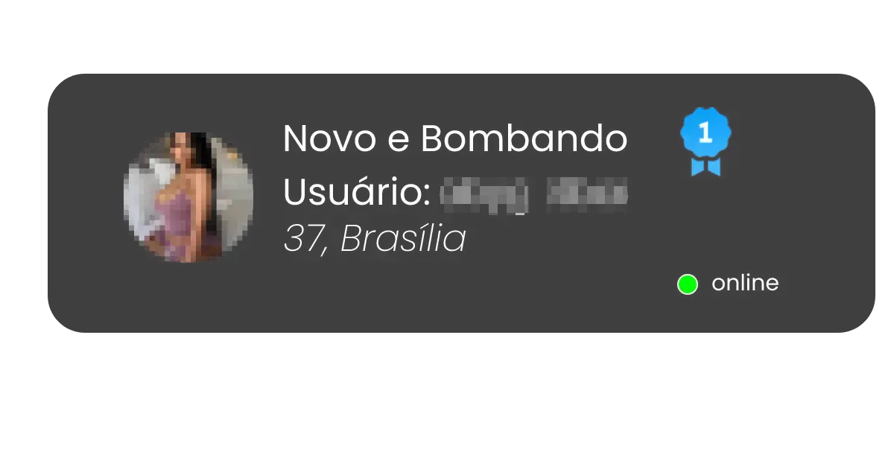
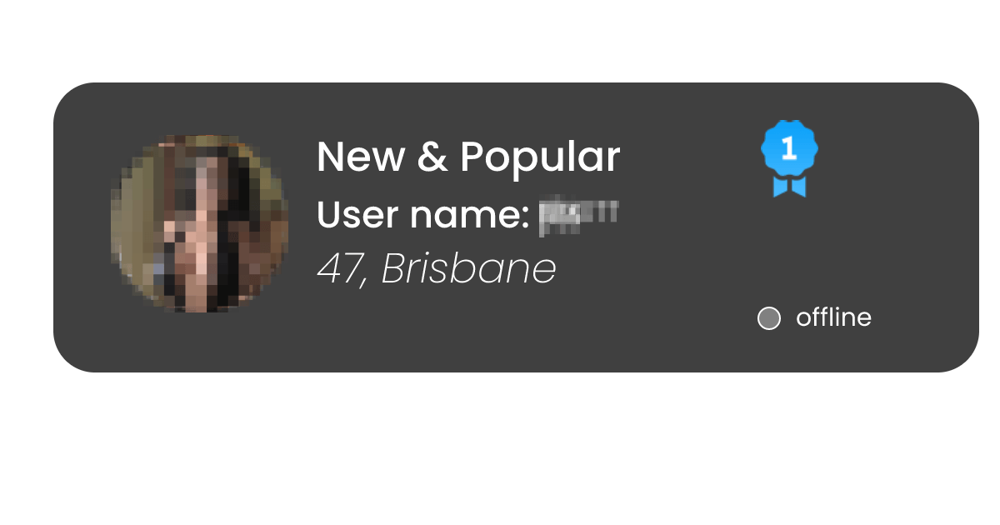
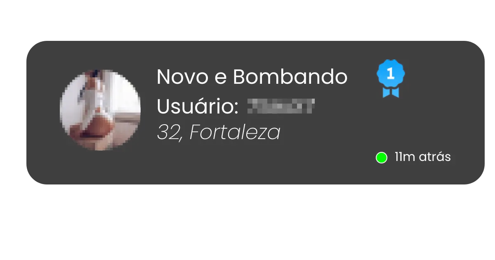
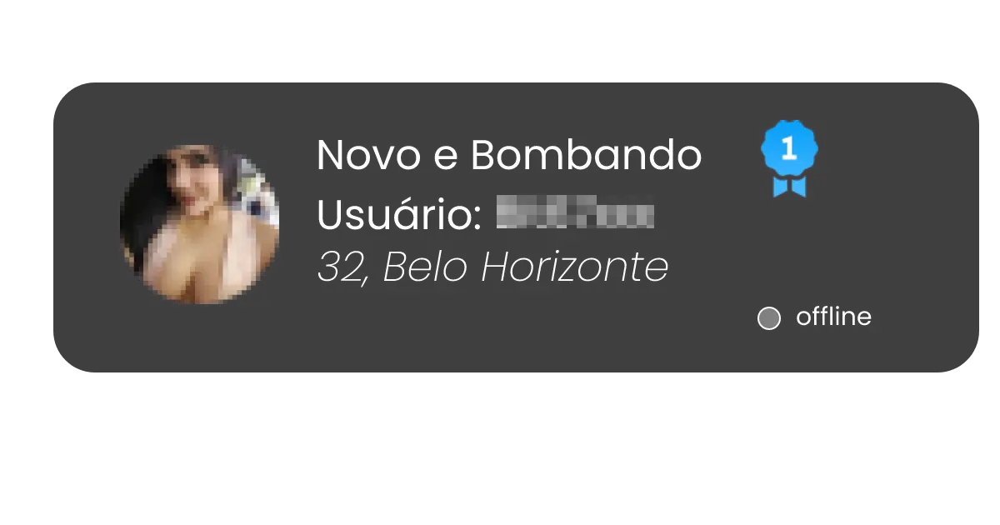
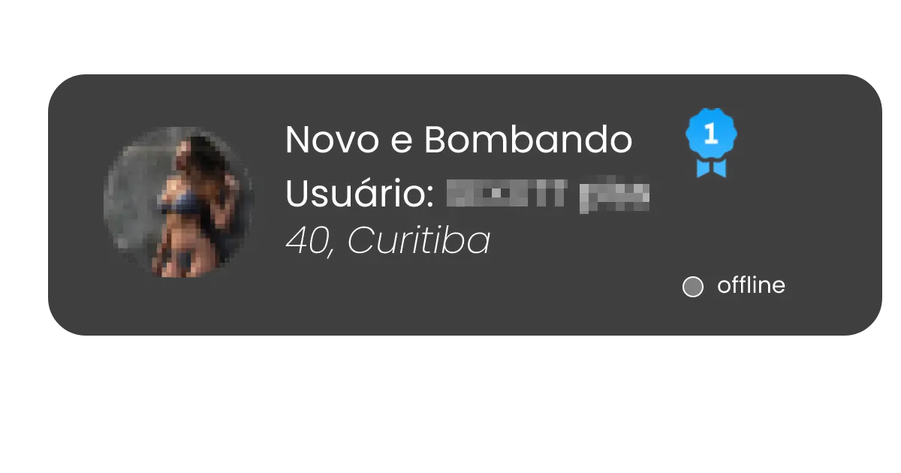
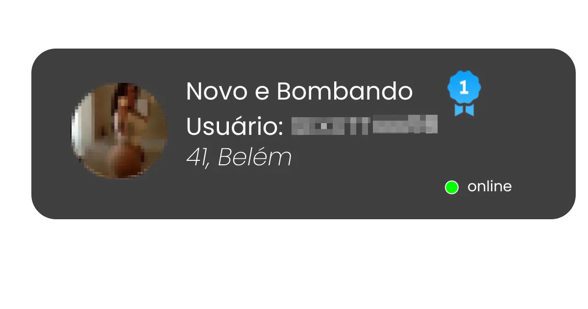
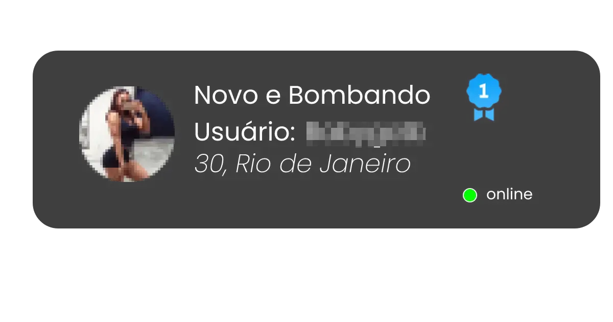
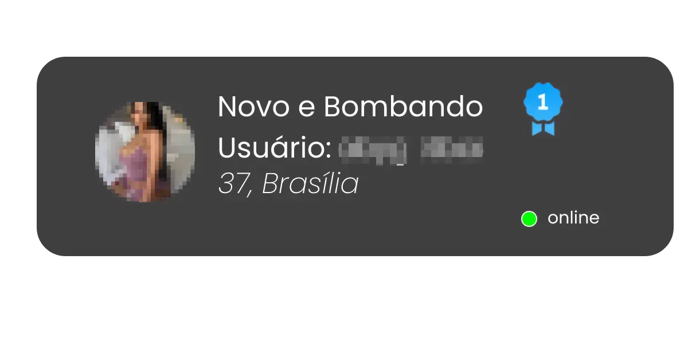
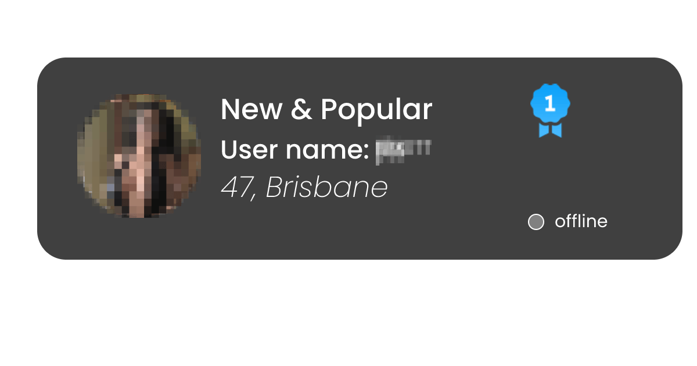
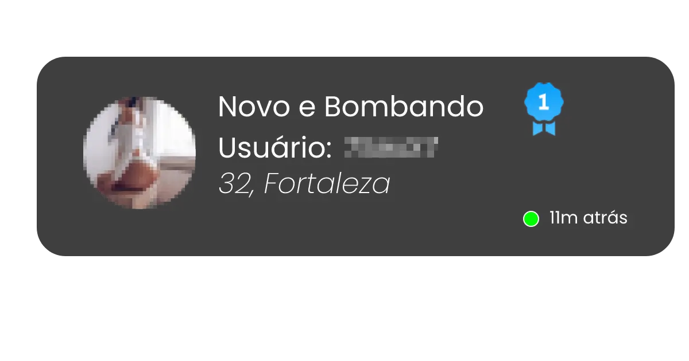
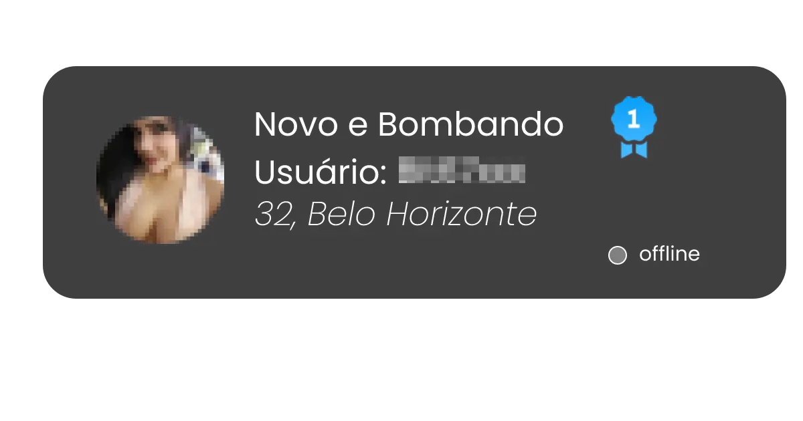
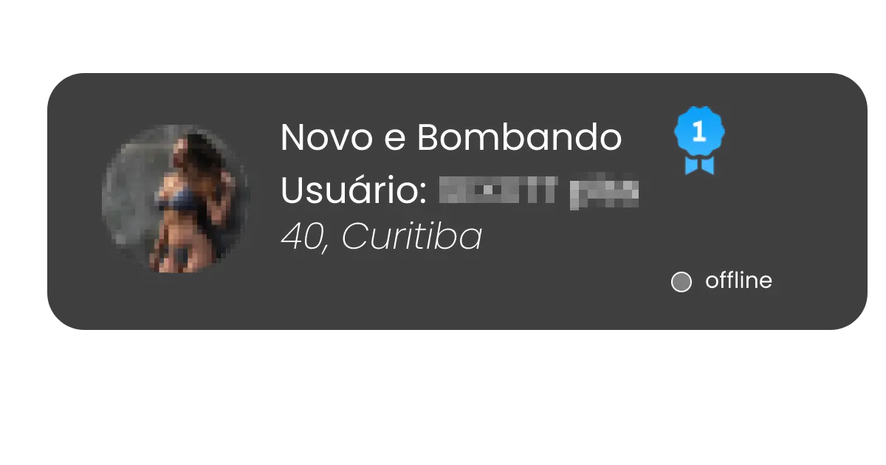
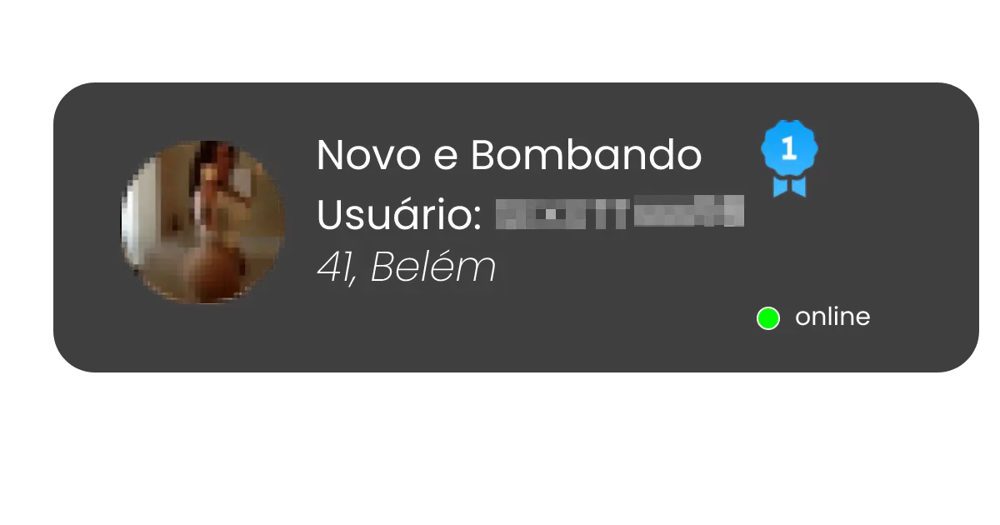
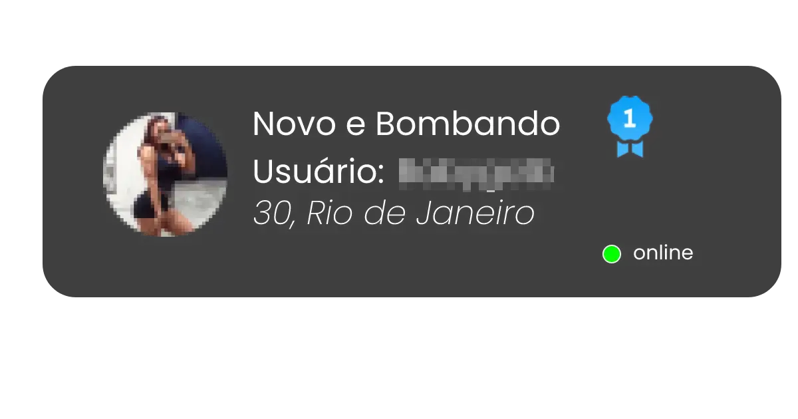